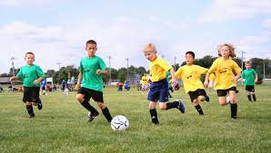
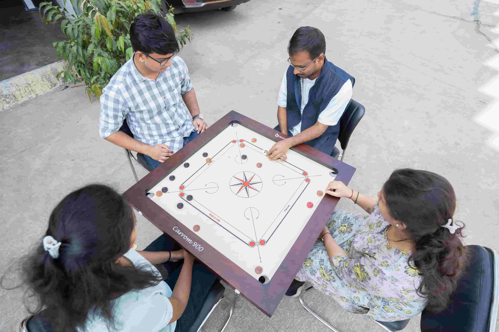
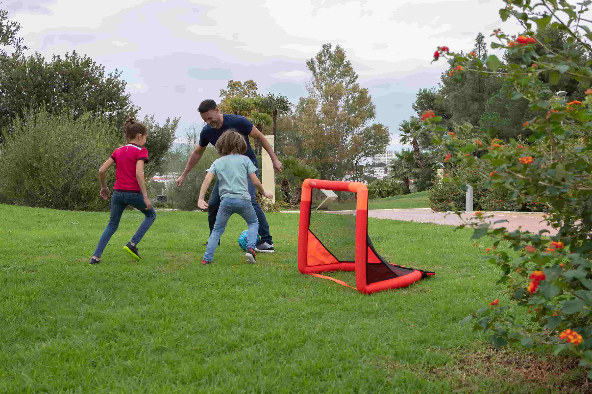
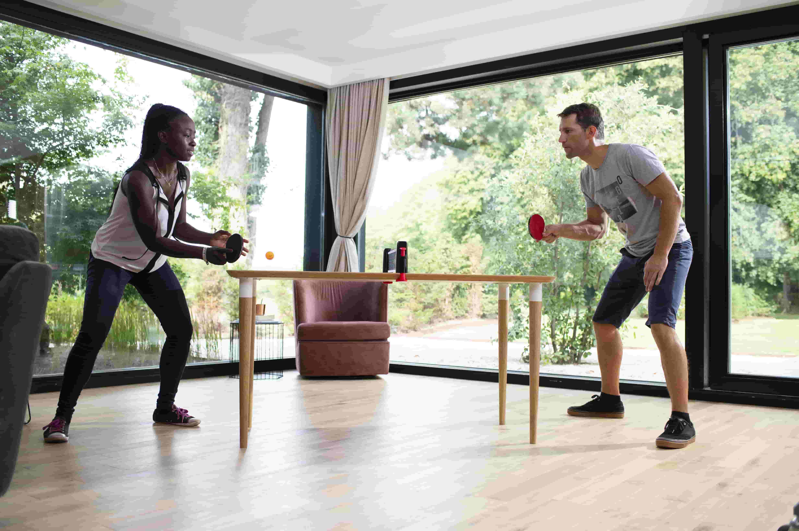
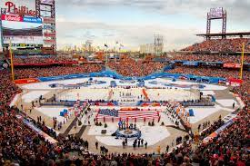
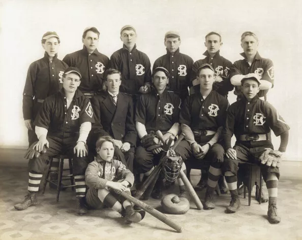

My sports is the best way to organise and enjoy the feel of playing and sleeping into the world of vitual sports - and shop for the ones you want. Enjoy all the entertainment provided free and in any platforms - MAC and windows.

play over 45 miilion Games,ad-free or download games and shop to play offline.
Sport pertains to any form of competitive physical activity or game[1] that aims to use, maintain or improve physical ability and skills while providing enjoyment to participants and, in some cases, entertainment to spectators.[2] Sports can, through casual or organized participation, improve one's physical health. Hundreds of sports exist, from those between single contestants, through to those with hundreds of simultaneous participants, either in teams or competing as individuals. In certain sports such as racing, many contestants may compete, simultaneously or consecutively, with one winner; in others, the contest (a match) is between two sides, each attempting to exceed the other. Some sports allow a "tie" or "draw", in which there is no single winner; others provide tie-breaking methods to ensure one winner and one loser. A number of contests may be arranged in a tournament producing a champion. Many sports leagues make an annual champion by arranging games in a regular sports season, followed in some cases by playoffs.
Sport is generally recognised as system of activities based in physical athleticism or physical dexterity, with major competitions such as the Olympic Games admitting only sports meeting this definition.[3] Other organisations, such as the Council of Europe, preclude activities without a physical element from classification as sports.[2] However, a number of competitive, but non-physical, activities claim recognition as mind sports. The International Olympic Committee (through ARISF) recognises both chess and bridge as bona fide sports, and SportAccord, the international sports federation association, recognises five non-physical sports: bridge, chess, draughts (checkers), Go and xiangqi,[4][5] and limits the number of mind games which can be admitted as sports.
Sport is usually governed by a set of rules or customs, which serve to ensure fair competition, and allow consistent adjudication of the winner. Winning can be determined by physical events such as scoring goals or crossing a line first. It can also be determined by judges who are scoring elements of the sporting performance, including objective or subjective measures such as technical performance or artistic impression.
Records of performance are often kept, and for popular sports, this information may be widely announced or reported in sport news. Sport is also a major source of entertainment for non-participants, with spectator sport drawing large crowds to sport venues, and reaching wider audiences through broadcasting. Sport betting is in some cases severely regulated, and in some cases is central to the sport.
According to A.T. Kearney, a consultancy, the global sporting industry is worth up to $620 billion as of 2013.[6] The world's most accessible and practised sport is running, while association football is the most popular spectator sport
1. Carrom - Most of us have a carrom board lying around somewhere collecting dust and if not, this might be a good time to invest in one. To play the traditional, two-player game, both the opponents will be seated on each side of the board opposite to each other. Carrom can also be played with four people playing as teams of two. While you're able to pass a big amount of time playing the game, you're also simultaneously building on your cognitive and focus skills.

2. Backyard Football - Whether you have a small backyard or you're using your living room as a backyard, just place a foldable Kipsta Cage and you're all set for the day practicing your scoring or goalkeeping skills.

3. Table Tennis - So table tennis essentially is an indoor sport but you don't necessarily need a table tennis table. Turn any table (including your dining table) in a table tennis table with the help of a roll-net that attaches to any table or even better if you don't have a partner, play wall table tennis by hitting the wall back and forth with the help of a wall.
> Start your trial now.
The documented history of sports goes back at least 3,000 years. In the beginning, sports often involved the preparation for war or training as a hunter, which explains why so many early games involved the throwing of spears, stakes, and rocks, and sparring one-on-one with opponents.

With the first Olympic Games in 776 BC—which included events such as foot and chariot races, wrestling, jumping, and discus and javelin throwing—the Ancient Greeks introduced formal sports to the world. The following by no means exhaustive list takes a look at the beginnings and evolution of some of today's most popular sporting pastimes.
Cricket: The game of cricket originated in south-east England sometime in the late 16th century. By the 18th century, it had become the national sport, making inroads globally in the 19th and 20th centuries. The prototype for the modern cricket bat featuring a willow blade and a cane handle layered with strips of rubber, and then tied with twine and covered with another layer of rubber to form a grip was invented around 1853. (The longest recorded game of cricket took place in 1939 and spanned a period of nine days.)
Baseball: Alexander Cartwright (1820-1892) of New York invented the baseball field as we know it in 1845. Cartwright and the members of his New York Knickerbocker Base Ball Club devised the first rules and regulations that became the accepted standard for the modern game of baseball.
Softball: In 1887, George Hancock, a reporter for the Chicago Board of Trade, invented softball as a form of indoor baseball that was first played on a cold winter day inside the warm Farragut Boat Club.